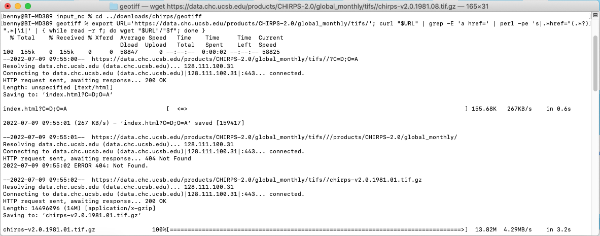
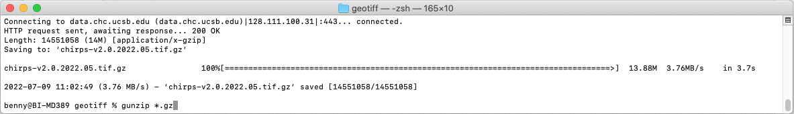
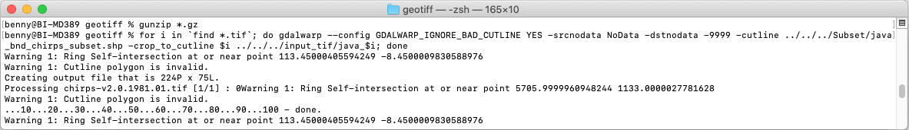
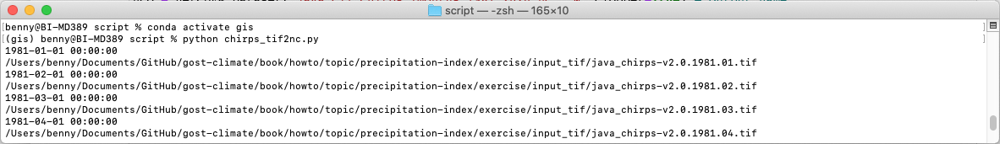
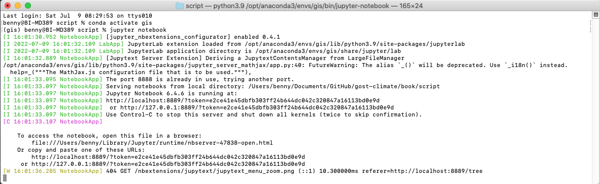
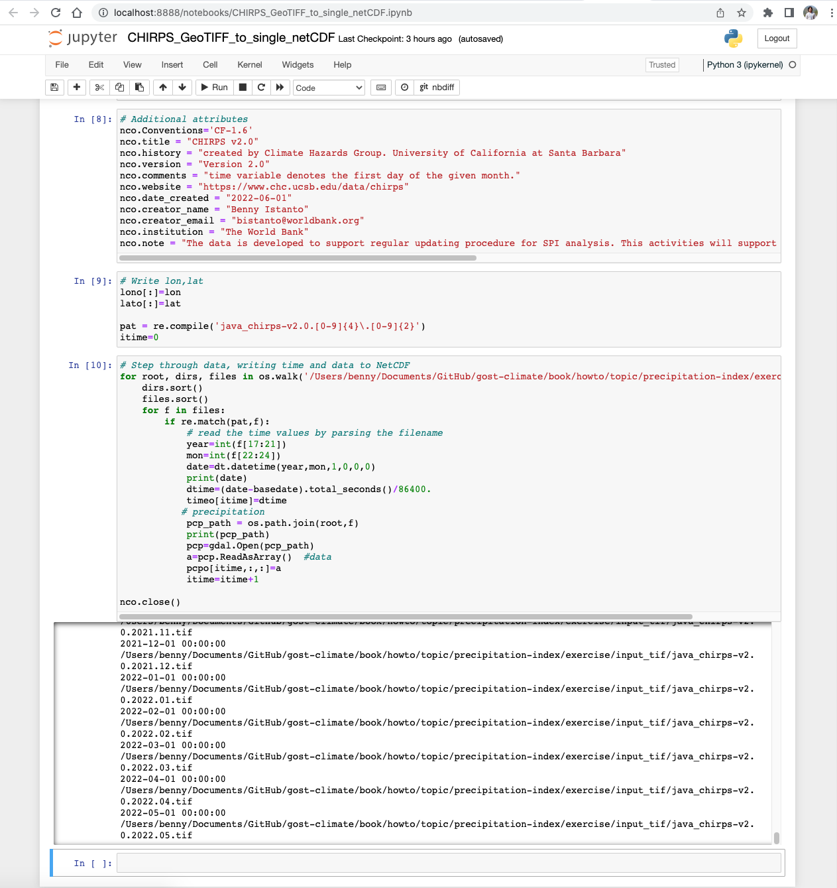
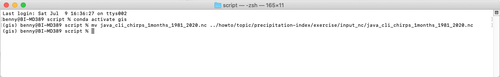
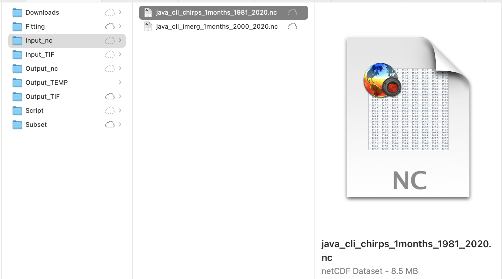

Monthly CHIRPS in GeoTIFF format
Contents
Monthly CHIRPS in GeoTIFF format#
This section will explain on how to download CHIRPS monthly data in GeoTIFF format and prepare it as input for SPI calculation.
Make sure you still inside conda
gisenvironment.
Download CHIRPS data#
Navigate to
downloads/chirps/geotifffolder in the working directory. Download usingwgetall CHIRPS monthly data in GeoTIFF format from January 1981 to May 2022 (this is lot of data ±7GB zipped files, and become 27GB after extraction, please make sure you have bandwidth and unlimited data package). If you doesn’t havewget, you can download the data via FTP client with addressftp.chc.ucsb.edu/pub/org/chc/products/CHIRPS-2.0.Paste and Enter below script in your Terminal.
export URL='https://data.chc.ucsb.edu/products/CHIRPS-2.0/global_monthly/tifs/'; curl "$URL" | grep -E 'a href=' | perl -pe 's|.*href="(.*?)".*|\1|' | { while read -r f; do wget "$URL"/"$f"; done }

Gunzip all the downloaded files
gunzip *.gz

Extract data based on area of interest#
Download the Java boundary shapefile. And save it in
subsetdirectory then unzip it.Note
You can use your own boundary in shapefile and use it to clip the rainfall raster data based on your preferred area of interest.
Still in your
geotiffdirectory, Clip your area of interest using Java boundary and save it toinput_tifdirectory. I will usegdalwarpcommand from GDAL to clip all GeoTIFF files in a folder.for i in `find *.tif`; do gdalwarp --config GDALWARP_IGNORE_BAD_CUTLINE YES -srcnodata NoData -dstnodata -9999 -cutline ../../../subset/java_bnd_chirps_subset.shp -crop_to_cutline $i ../../../input_tif/java_$i; done

If you have limited data connection or lazy to download ±7GB and process ±27GB data, you can get pre-processed clipped data for Java covering Jan 1981 to Dec 2020, with file size ±6.8MB. Link: https://github.com/bennyistanto/gost-climate/tree/main/book/howto/topic/precipitation-index/exercise/input_tif
Convert GeoTIFFs to single netCDF#
Download python script/notebook that we use to convert GeoTIFF in a folder to single netCDF, save it to
scriptfolder.Below is the script
#!/usr/bin/env python """ ------------------------------------------------------------------------------------------------------------- Convert CHIRPS GeoTIFF in a folder to single NetCDF file with time dimension enabled that is CF-Compliant http://cfconventions.org/cf-conventions/v1.6.0/cf-conventions.html Based on Rich Signell's answer on StackExchange: https://gis.stackexchange.com/a/70487 This script was tested using CHIRPS dekad data. Adjustment is needed if using other timesteps data for CHIRPS NCO (http://nco.sourceforge.net) must be installed before using this script Modified by Benny Istanto, GOST/DECAT, bistanto@worldbank.org ------------------------------------------------------------------------------------------------------------- """ import numpy as np import datetime as dt import os from osgeo import gdal import netCDF4 import re ds = gdal.Open('/path/to/directory/java_chirps-v2.0.1981.01.tif') # Data location a = ds.ReadAsArray() nlat,nlon = np.shape(a) b = ds.GetGeoTransform() #bbox, interval lon = np.arange(nlon)*b[1]+b[0] lat = np.arange(nlat)*b[5]+b[3] basedate = dt.datetime(1980,1,1,0,0,0) # Create NetCDF file nco = netCDF4.Dataset('java_cli_chirps_1months_1981_2020.nc','w',clobber=True) # Output name # Create dimensions, variables and attributes: nco.createDimension('lon',nlon) nco.createDimension('lat',nlat) nco.createDimension('time',None) timeo = nco.createVariable('time','f4',('time')) timeo.units = 'days since 1980-1-1 00:00:00' timeo.standard_name = 'time' timeo.calendar = 'gregorian' timeo.axis = 'T' lono = nco.createVariable('lon','f4',('lon')) lono.units = 'degrees_east' lono.standard_name = 'longitude' lono.long_name = 'longitude' lono.axis = 'X' lato = nco.createVariable('lat','f4',('lat')) lato.units = 'degrees_north' lato.standard_name = 'latitude' lato.long_name = 'latitude' lato.axis = 'Y' # Create container variable for CRS: lon/lat WGS84 datum crso = nco.createVariable('crs','i4') crso.long_name = 'Lon/Lat Coords in WGS84' crso.grid_mapping_name='latitude_longitude' crso.longitude_of_prime_meridian = 0.0 crso.semi_major_axis = 6378137.0 crso.inverse_flattening = 298.257223563 # Create float variable for precipitation data, with chunking pcpo = nco.createVariable('precip', 'f4', ('time', 'lat', 'lon'),zlib=True,fill_value=-9999.) pcpo.units = 'mm' pcpo.standard_name = 'convective precipitation rate' pcpo.long_name = 'Climate Hazards group InfraRed Precipitation with Stations' pcpo.time_step = 'month' pcpo.missing_value = -9999. pcpo.geospatial_lat_min = -8.8 pcpo.geospatial_lat_max = -5.05 pcpo.geospatial_lon_min = 105.05 pcpo.geospatial_lon_max = 116.25 pcpo.grid_mapping = 'crs' pcpo.set_auto_maskandscale(False) # Additional attributes nco.Conventions='CF-1.6' nco.title = "CHIRPS v2.0" nco.history = "created by Climate Hazards Group. University of California at Santa Barbara" nco.version = "Version 2.0" nco.comments = "time variable denotes the first day of the given month." nco.website = "https://www.chc.ucsb.edu/data/chirps" nco.date_created = "2022-06-01" nco.creator_name = "Benny Istanto" nco.creator_email = "bistanto@worldbank.org" nco.institution = "The World Bank" nco.note = "The data is developed to support regular updating procedure for SPI analysis. This activities will support The World Bank to assess extreme dry and wet periods as part of The World Bank's Climate Analytics" # Write lon,lat lono[:]=lon lato[:]=lat pat = re.compile('java_chirps-v2.0.[0-9]{4}\.[0-9]{2}') itime=0 # Step through data, writing time and data to NetCDF for root, dirs, files in os.walk('/path/to/directory/'): dirs.sort() files.sort() for f in files: if re.match(pat,f): # read the time values by parsing the filename year=int(f[17:21]) mon=int(f[22:24]) date=dt.datetime(year,mon,1,0,0,0) print(date) dtime=(date-basedate).total_seconds()/86400. timeo[itime]=dtime # precipitation pcp_path = os.path.join(root,f) print(pcp_path) pcp=gdal.Open(pcp_path) a=pcp.ReadAsArray() #data pcpo[itime,:,:]=a itime=itime+1 nco.close()
You MUST adjust the folder location (replace /path/to/directory/ with yours, example: /Users/benny/Documents/GitHub/gost-climate/book/howto/topic/precipitation-index/exercise/input_tif/java_cli_chirps-v2.0.1981.01.1.tif) in line 22 and 102.
Warning
If you are using other data source (I assume all the data in WGS84), you need to adjust few code in chirps_tif2nc.py:
Line 22: folder location Line 31: start of the date Line 34: output name Line 42: date attribute Line 74-77: bounding box Line 98: output filename structure Line 102: folder location Line 108-110: date character location in a filename
After everything is set, then you can execute the translation process (choose one or you can try both for learning).
Using Python in Terminal, navigate to your
scriptdirectory, type below script.python tiff2nc.py

Wait for a few moments, you will get the output
java_cli_chirps_1months_1981_2020.nc. You will find this file insideinput_tiffolder. Move it toinput_ncfolder.Using Jupyter, make sure you still inside conda
gisenvironment. Access this*.ipynbfile insidescriptfolder by navigate your Terminal toscriptthen typejupyter notebook.
Navigate to your notebook directory (where you put
*.ipynbfile), run Cell by Cell until completed. Wait for a few moments, you will get the outputjava_cli_chirps_1months_1981_2020.nc.
As the input data preparation is completed, move the file
java_cli_chirps_1months_1981_2020.ncto main folderinput_nc.mv java_cli_chirps_1months_1981_2020.nc ../howto/topic/precipitation-index/exercise/input_nc/java_cli_chirps_1months_1981_2020.nc

Make sure the file
java_cli_chirps_1months_1981_2020.ncis available atinput_ncfolder.
You also can get this data:
java_cli_chirps_1months_1981_2020.ncvia this link on Github.